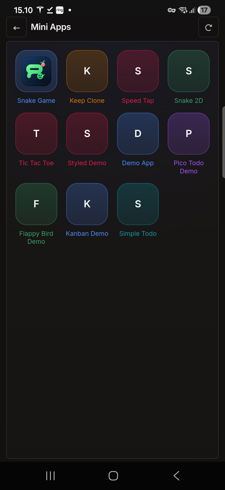
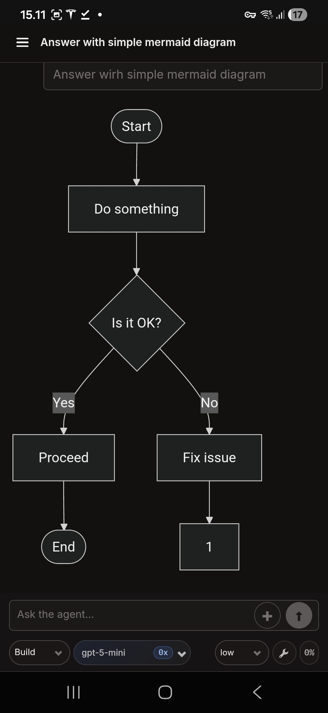
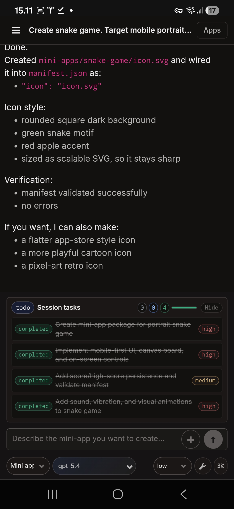
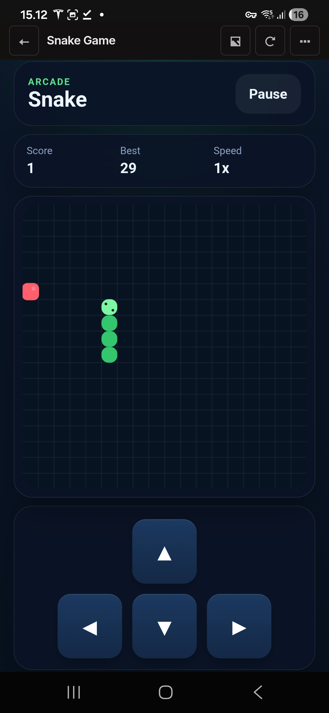

Build from your phone, not around it.
Chat with an agent inside a local workspace, edit files, and turn ideas into runnable Mini Apps. Choose ChatGPT/Codex, fund hosted models with Opper Wallet, or run Gemma on-device on supported Android hardware.
Inside The App
A quick look at the workspace UI, mini-app generation flow, and generated mini-app runtime inside Droiderix.




Workspace Overview
Browse core surfaces from the Android app shell, including chats, files, generated mini-apps, and settings.
Agent Chat
Run tasks in persistent, workspace-scoped chats using your selected hosted or on-device model.
Mini-App Generator
Turn natural-language requests into runnable mini-app workflows inside the app runtime.
Generated Runtime
Launch and reuse generated mini-apps directly inside Droiderix without leaving the workspace.
Mini-Apps + Agent Runtime
Droiderix stands out by pairing workspace-scoped agent execution with generated mini-app workflows that run inside the app host.
Generate Runnable Mini-Apps
Use the agent to create mini-app workflows inside your workspace, then discover, validate, launch, and reuse them directly in the Droiderix runtime.
Local Workspaces
Keep each project in its own app-managed workspace with scoped file access, persistent chats, drafts, and run state.
Focused Agent Tools
Let the agent work with local files, local git status and diffs, memory, clipboard, HTTP fetches, web-to-Markdown, and device status.
Choose Your Model Path
Sign in with ChatGPT/Codex, use Opper Wallet to access hosted models, or install Gemma-4-E2B for local LiteRT inference on supported devices.
On-Device Gemma
Download the optional Gemma-4-E2B model once, then keep prompts and inference on your device without a hosted model connection.
Local-First Persistence
Workspaces, chats, memories, settings, and Mini App permissions stay in app-managed storage. Provider credentials use Android secure storage.
Backup & Restore
Export an explicit backup when you need one and restore your local Droiderix data without depending on a Droiderix cloud account.
Choose Where Inference Runs
Droiderix does not operate an inference proxy. Use a hosted provider directly, choose models through Opper Wallet, or keep inference on your Android device.
Choose models with Opper Wallet
Top up your wallet and select from hosted providers and models, including Europe-hosted options when available. Requests go from Droiderix to Opper's gateway, which may route them to your selected model provider.
Sign in with ChatGPT / Codex
Use your OpenAI access for hosted inference while Droiderix keeps the workspace and agent runtime on your phone. Prompts and requested context go directly to the provider, not through a Droiderix backend.
Take Gemma offline
On supported Android 12+ hardware, download Gemma-4-E2B once and run prompts and inference locally with LiteRT. No cloud login or model usage fee is required. Network tools connect only when you choose to use them.
Model availability, data residency, retention, and regional processing depend on the provider and model you select.
Access Plans
Try every v1 feature free for 7 days. Subscribe through Google Play if Droiderix earns a place on your phone. Hosted model subscriptions or usage are separate; on-device Gemma inference has no model usage fee.
- All Play v1 features
- 7-day free trial
- Cancel through Google Play
- All Play v1 features
- Save 30% vs monthly
- 7-day free trial